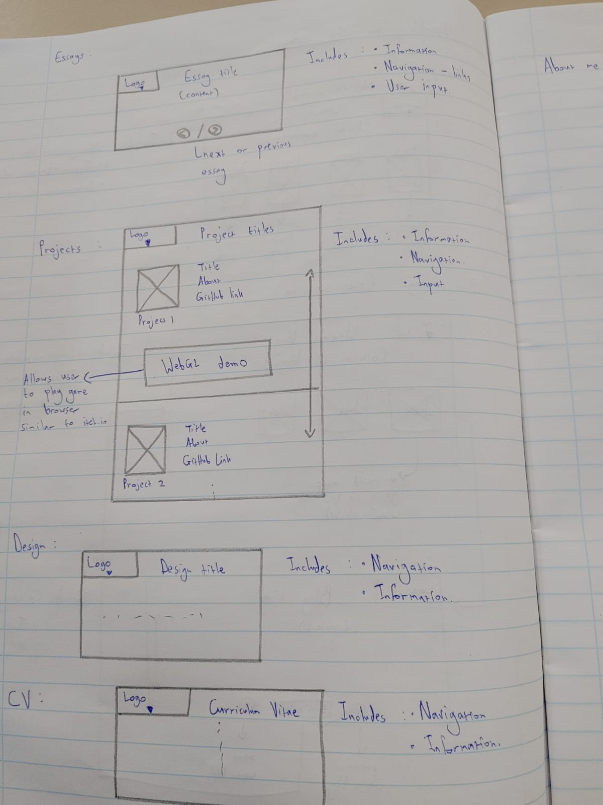
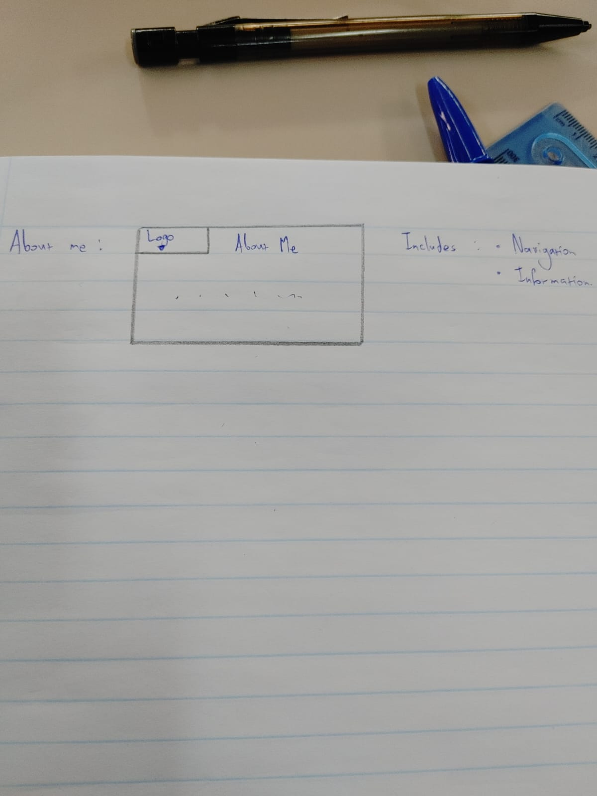

Week 4 ( – )
Design Section for the Website
The initial design idea for the website includes a home page, an essays page, a blog page, a design page, a projects page, an introduction page to myself and a page hosting my CV.
The homepage currently only has the navigation links to the other pages. These links are listed under each other currently but according to the design they need to be vertical and on the left side of the homepage. A title and logo for the website is still being decided upon to get a general theme for the homepage and the website in general; however, this will only be important when styling and JavaScript is implemented. The right side of the website homepage will have images that can act as links to priority pages (essays, blogs, design and projects). Further research is being done in regard to how to achieve this, but I am assuming that to get the proper layout I want I will require styling and JavaScript.
The blog page is the most developed aspect of the website due to the weekly additions to the blog discussion board. The pages can be traversed using buttons which currently go to the previous and next page. The navigation menu still needs to be added to this section to allow the user to traverse back to the home page or to any of the other relevant pages.
The design section has images of the wireframe ideas and some text explaining the concepts for the design. More will be added to this section when the wireframe soon becomes expanded upon.
The projects page currently has screenshots of the different Game Design projects worked on last year with the project’s titles. The goal is to have media clips with short demonstrations act as the main thumbnail for these projects and ultimately, I want to be able to make sections playable in the browser by possibly using WebGL in Unity. More projects from other courses will be added to the projects page as development continues.
The information page has text explaining a little bit about myself accompanied by a suitable picture. Similarly, the CV page will have my CV typed out on the webpage.
The essays page is currently blank as we have not done any essays yet. However, if I can find essays from previous years, I will be able add these to the essays page (the essays page will function similarly to the blogs page). The designs that I still need to do is adding the navigation bar to each page as well as ensuring the title or logo of the website is prevalent on each page.
The IxD Process
The IxD Process is as follows: goal alignment, information structure, user flow, interface elements, design and implementation.
The goal alignment is essentially what I want the user to see and do with the website. The target audience for the website is of course the lecturers marking the website but also potential employers. Therefore, the website should be relatively professional while still showcasing enough creativity to give the viewer a good idea of what kind of person I am. Since the main audience currently is the markers, the main content should be the work done in class (the blog posts, essays and design section). Since potential employers will also be viewing this website the projects section should also be emphasized as this section will be the primary highlight of my skills.
The information structure should map out the website. Therefore, the homepage should give a brief overview of the website while delivering the appropriate tone and visual aesthetic to the site so the user will have a good overview of what to expect. The homepage will primarily be used for navigation hence a navigation bar with all the possible pages to visit will be available. This navigation bar will help make the website more accessible so it will be included on each page in the website (with an option to expand or reduce it). Some of the pages (mentioned in goals) will be prioritized by having a section next to the navigation bar with animated images. Clicking on these images will take the user to the respective page. The blog page will have a broad overview of the blog and links to the respective blogs according to the tree hierarchy. Each blog will include a button that takes the user to the next or previous blog and a button at the top to take the user back to the main blog page (law of locality).
The essays page will have fewer entries than the blog page; therefore, the user will be taken straight to the first essay from the essay link. A button will be included for navigation between the essays.
The information and CV pages will simply be a page like any word document with minimal interaction components as these pages are simply for more information. The design page will also follow suit as this page gives clarity on the design process for the website already discussed via the blog posts. The projects page will have a list of each project organized vertically with the best project being at the top (serial position effect). There will be a short media clip that the user can view to get an overview of the project. Hopefully the page will also include WebGL links so that the user will be able to play some of the projects directly through the website.


To incorporate proper design principles multiple approaches are taken accordingly. On the home page each of the main page links will encompass an animated image relating to the page. This way each of these pages will make the user think that the pages are interesting and will be more enticed to view each page. The user input on each page is kept relatively simple to buttons and scrollbars to avoid complexity hence keeping the website simple and easy to navigate. Since the navigation bar by the logo of the website is a key aspect for the user to traverse the website, it is kept in the top right corner of each page to ensure the user will always remember it as an option to traverse the site. The blog page is organised using a tree structure to allow easier access to each of the blogs compared to starting at the first blog and needing to traverse through each blog to reach the desired page. Each page has an overview under the title explaining the content of each page, so the user has a clear understanding of what they are viewing. The website design took inspiration from sites such as IGN and some of the past students work.
The initial wireframe changed a lot upon learning more about the IxD process and each page is now more developed to correspond to intuitive and accessible UX and UI.
Reflection on Website 1
The Website developed smoothly as all the HTML concepts needed were explored and demonstrated in class in conjunction with MDN Web Docs. The only issues that arose were more in the overall presentation, but these issues will be fixed when CSS and JavaScript are more thoroughly explored. Issue I am yet to resolve is creating the collapsable navigation menu, aligning everything according to the wireframe design and having the Logo appear on each page. These issues will hopefully be resolved in time for the assignment submission.